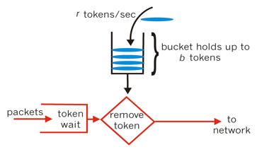

分布式基础（二一）——分布式理论之高可用：降级|熔断|限流
一、引言
无论是Master-Slave架构，还是集群架构，主要都是应对系统级的故障。在实际业务运行过程中，还有另外一种故障影响可能没有系统级那么大，但发生的概率较高，这就是接口级故障。
接口级故障的典型表现就是系统并没有宕机，网络也没有中断，但业务却出现问题了。例如，业务响应缓慢、大量访问超时、大量访问出现异常，这类问题的主要原因可能是系统压力太大、负载太高，导致无法快速处理业务请求，也可能是内部程序出错，由此引发更多的后续问题。
解决接口级故障的核心思想就是：优先保证核心业务和优先保证绝大部分用户。
目前主流的解决接口级故障的方式有以下几种：
- 降级
- 熔断
- 限流
本文主要对降级、熔断、限流的基本概念做阐述，后续的进阶篇中会以开源框架Hystrix为例，介绍这些方案的实现和原理。
二、降级
降级，是指将系统中的某些业务或接口的功能降低，只提供部分功能或完全停掉所有功能。例如，论坛可以降级为只能看帖子，不能发帖子；再比如，应用一般会有告警功能或日志采集功能，可以完全停掉一段时间，这段时间内不进行异常告警或日志采集。
一般来说，要对系统进行降级，则在设计功能/模块时，就要考虑做一些开关，以便未来通过开关即可启停功能。降级操作常常独立到一个单独的系统中，由系统管理员进行管理，以便实现复杂的权限管理、批量操作等功能，其基本架构如下：
三、熔断
降级的目的主要是应对服务自身的异常；而熔断，目的则是应对依赖的外部系统故障的情况。分布式系统中，服务之间都存在着链式调用关系。比如下面这种场景，核心服务1、2依赖于核心服务3，核心服务3依赖于辅助服务4，正常情况下，一切都没问题：
如果辅助服务4出现异常或接口响应开始变慢，会导致依赖它的核心服务3被拖慢，进一步导致核心服务1、2被拖慢，最终整个服务都被拖垮，系统对外变得不可用：

上述异常场景就是典型的服务雪崩。 但如何监测依赖服务的异常情况是个难点，所以熔断机制实现的关键点是：
- 需要有统一的API调用层，由API调用层进行采样或统计（如果接口调用散落在代码各处就没法进行统一处理）
- 阈值的设计：例如1分钟内30%的请求响应时间超过1秒就熔断，这个策略中的“1分钟”“30%”“1秒”都对最终的熔断效果有影响。实践中一般都是先根据分析确定阈值，然后上线观察效果，再进行调优。
四、限流
限流，是从用户访问压力的角度来考虑如何应对故障，即只允许系统能够承受的访问量进来，超出系统访问能力的请求将被丢弃。限流一般都是系统内实现的，常见的限流方式可以分为两类：基于请求限流、基于资源限流、排队限流。
4.1 基于请求限流
基于请求限流，指从外部访问的请求角度考虑限流，常见的方式有：限制总量、限制时间量。
限制总量：限制某个指标的累积上限，如限制当前系统服务的用户总量（如在线总用户数上限为100万，超过100万后新的用户无法进入）、限制某个抢购活动商品数量只有100个，限制参与抢购的用户上限为1万个，1万以后的用户直接拒绝；
限制时间量：限制一段时间内某个指标的上限，例如，1分钟内只允许10000个用户访问，每秒请求峰值最高为10万。
无论是限制总量还是限制时间量，共同的特点都是实现简单，但在实践中面临的主要问题是比较难以找到合适的阈值，例如系统设定了1分钟10000个用户，但实际上6000个用户的时候系统就扛不住了；也可能达到1分钟10000用户后，其实系统压力还不大，但此时已经开始丢弃用户访问了。
为了找到合理的阈值，通常情况下可以采用性能压测，但性能压测也存在覆盖场景有限的问题，可能出现某个性能压测没有覆盖的功能导致系统压力很大；另外一种方式是逐步优化，即：先设定一个阈值然后上线观察运行情况，发现不合理就调整阈值。
根据阈值来限制访问量的方式更多的适应于业务功能比较简单的系统，例如负载均衡系统、网关系统、抢购系统等。
目前也有一些比较成熟的基于请求限流的算法，比如令牌桶算法和漏桶算法。
令牌桶算法
令牌桶算法的基本思想如下：
- 首先，我们有一个固定容量的桶，桶里存放着令牌（token），可以看成是资源；
- 桶一开始是空的，token以 一个固定的速率 r 往桶里填充，直到达到桶的容量，多余的令牌将会被丢弃；
- 每当一个请求过来时，就会尝试从桶里移除一个令牌，如果没有令牌的话，就阻塞等待。

令牌桶算法的特点是：当出现峰值流量时，消耗token的速率就会加快，但是token本身产生的速率是一定的，所以该算法可以应对一定的突发流量。
漏桶算法
漏桶算法的基本思想如下：
- 水(请求)先进入到漏桶里，漏桶以固定的速度出水(接口有响应速率)；
- 当水流速过大会直接溢出(访问频率超过接口响应速率)，然后就拒绝请求。

漏桶的漏出速率是固定的参数，所以漏桶算法对于存在突发特性的流量来说缺乏效率。
4.2 基于资源限流
基于资源限流，指找到系统内部影响性能的关键资源，对其使用上限进行限制。常见的内部资源有：连接数、文件句柄、线程数、请求队列等。
例如，采用Netty来实现服务器，每个进来的请求都先放入一个队列，业务线程再从队列读取请求进行处理，队列长度最大值为10000，队列满了就拒绝后面的请求；也可以根据CPU的负载或者占用率进行限流，当CPU的占用率超过80%的时候就开始拒绝新的请求。
相比基于请求限流，基于资源限流更能有效地反映当前系统的压力，但实践中设计也面临两个主要的难点：如何确定关键资源，如何确定关键资源的阈值。通常情况下，这也是一个逐步调优的过程，即：设计的时候先根据推断选择某个关键资源和阈值，然后测试验证，再上线观察，如果发现不合理，再进行优化。
4.3 排队限流
排队限流就是让用户等待一段时间，排队限流不会直接拒绝用户，一般将用户请求放入一个队列中。
排队模块
负责接收用户的请求，将请求以FIFO的方式保存下来。例如，在商户秒杀业务中，可以将每一个参加秒杀活动的商品保存一个队列，队列大小可以根据参与秒杀的商品数量自行定义。
调度模块
负责排队模块到服务模块的动态调度：不断检查服务模块，一旦处理能力有空闲，就从排队队列出队一个用户请求调入服务模块。调度模块不只是传递请求而已，还担负着调节系统处理能力的重任，对服务模块进行负载均衡。
服务模块
负责调用真正的业务处理服务，并返回处理结果。